Accesibilidad
en la Web

¿Qué es la accesibilidad web?
Según Wikipedia:
La accesibilidad web denota la práctica inclusiva de eliminar barreras que impiden el acceso e interacción con los sitios web por parte de personas con discapacidades.
Según Web Accessibility Initiative (WAI-W3C):
La accesibilidad web implica que las personas con discapacidad pueden percibir, comprender, navegar e interactuar con la Web, y que pueden participar de la misma.
¿Por qué es importante?
- Principio de igualdad de oportunidades
- La web es un recurso presente en muchos ámbitos: salud, educación, política, comercio, etc.
- Los sitios web accesibles permiten la participación activa de las personas con discapacidad en estos ámbitos.
-
Legislación vigente
- Ley 34/2002 de Servicios de la Sociedad de la Información (LSSI).
- RD 1494/2007. Especifica el grado de accesibilidad aplicable a las páginas de internet de las administraciones públicas (AA).
- Directiva UE 2016/2012 sobre accesibilidad de sitios web y aplicaciones móviles de organismos del sector público (≤ sep. 2018 en España).
Otras ventajas de los sitios web accesibles:
- También beneficia a personas sin discapacidad: permite desarrollo de sistemas adaptables a distintos contextos (conexiones lentas, discapacidad «temporal», edad avanzada).
- Incrementa cuota de mercado y audiencia.
- Imagen de responsabilidad social.
Componentes involucrados en la accesibilidad

Diversidad funcional
Tipos de discapacidad:
- Discapacidad sensorial.
- Discapacidad intelectual.
- Discapacidad física.
- [Discapacidad psíquica].
Discapacidad sensorial
- Discapacidad visual: ceguera, visión reducida, ceguera parcial (un ojo), daltonismo.
- Discapacidad auditiva: sordera, hipoacusia, unilateral o bilateral.
Discapacidad visual
Barreras en la Web
- Contenido multimedia sin contenido textual equivalente.
- Ausencia de estructura en página web y de elementos de navegación visuales o no visuales.
- Combinaciones de colores con insuficiente contraste.
- Imposibilidad de redimensionar texto e imágenes.
Herramientas de acceso a la Web
- Lectores de pantalla (screen readers).
- Magnificador de pantalla (screen magnifiers).
- Dispositivos Braille.
- Navegación por teclado.
- Personalización de fuentes y colores (alto contraste).
- Transcripciones textuales.
Discapacidad auditiva
Barreras en la Web
- Contenido de audio sin transcripción o subtítulos.
- Imposibilidad de ajuste de volumen.
Herramientas de acceso a la Web
- Subtítulos y transcripciones.
- Alertas y notificaciones visuales.
- Lenguaje de signos.
- Control de volumen.
Discapacidad intelectual y psíquica
Influyen en el modo en el que se percibe la información. La discapacidad psíquica no está relacionada con la inteligencia de una persona.
- Discapacidad intelectual: discapacidad de desarrollo, síndrome de Down.
- Discapacidad perceptual: dislexia, orientación espacio-temporal.
- Trastorno por déficit de atención e hiperactividad (TDAH).
- Trastorno del espectro autista (TEA).
- Factores neurológicos: epilepsia, migraña, esclerosis múltiple, etc.
Discapacidad relacionada con condiciones neurológicas
Barreras en la Web
- Contenido en movimiento o parpadeante.
- Algunos tipos de animaciones y contenido audio.
Herramientas de acceso a la Web
- Bloqueadores de animaciones y ventanas emergentes.
- «Modo lectura» en navegadores.
Discapacidad cognitiva
Barreras en la Web
- Sistemas complejos de navegación en la web.
- Pasajes de texto sin imágenes, gráficos, resaltado de estructura.
Herramientas de acceso a la Web
- Visualizador de esquema del documento.
Discapacidad física
Incluye limitaciones del control muscular, sensibilidad, movilidad o ausencia de extremidades. Por ejemplo:
- Amputación, malformación en extremidades.
- Tetraplejia.
- Espasmos musculares, tics.
- Lesión por esfuerzo repetitivo (RSI).
Barreras en la Web
- Sistemas accesibles exclusivamente mediante ratón.
- Navegación inconsistente entre distintas páginas.
- Tiempo insuficiente para rellenar formularios.
Herramientas de acceso a la Web
- Navegación mediante teclado.
- Teclado en pantalla.
- Pulsación separada de teclas (Ctrl, Alt, etc.).
- Seguimiento ocular (eye tracking).
Web Accessibility Initiative (WAI)
Es un subgrupo del W3C dedicado a la mejora de la accesibilidad de la Web a personas con diversidad funcional.
Se compone, a su vez, de grupos de trabajo que desarrollan su labor en distintos ámbitos:
- Accesibilidad de herramientas de creación de contenido.
- Accesibilidad de los clientes (agentes de usuario).
- Pautas de diseño accesible.
- Herramientas de evaluación de la accesibilidad.
- Protocolos y formatos
- Formación en accesibilidad.
Pautas de accesibilidad
Los grupos de trabajo de WAI producen informes técnicos, que evolucionan en recomendaciones del W3C.
Estas recomendaciones incluyen pautas de accesibilidad web, que involucran a las tres componentes mencionadas anteriormente:
Documentos del W3C
Para herramientas de creación de contenidos:
W3C Recommendation - 24 September 2015
https://www.w3.org/TR/ATAG20/
Para clientes (p.ej. navegadores):
W3C Working Group Note - 15 December 2015
https://www.w3.org/TR/UAAG20/
El documento que más concierne a los desarrolladores web es el relativo al contenido web:
W3C Recommendation - 11 December 2008
https://www.w3.org/TR/WCAG20
Este documento se organiza en torno a las cuatro propiedades que ha de cumplir el contenido web accesible:
- Perceptible
- Operable
- Comprensible
- Robusto
Contenido perceptible
El contenido debe mostrarse de un modo en el que pueda ser percibido por un usuario.
Pautas a seguir (resumen):
- Proporcionar texto alternativo al contenido no textual (imágenes, vídeos, etc).
- Proporcionar subtítulos y medios de apoyo al contenido multimedia.
- Crear contenido que pueda ser representado en distintos medios, sin alterar su significado.
- El contenido debe ser fácilmente visible y/o audible.
Contenido operable
La propiedad de operabilidad involucra la interacción del usuario con el sitio web.
Pautas a seguir (resumen):
- La funcionalidad ha de ser accesible desde el teclado.
- Los usuarios han de tener el tiempo suficiente para leer y hacer uso del contenido del sitio web.
- No hacer uso de contenido que pueda causar ataques de epilepsia o convulsiones.
- Proporcionar facilidades de búsqueda y navegación por el contenido.
Contenido comprensible
Pautas a seguir (resumen):
- El texto debe ser legible y comprensible.
- La interacción con el contenido debe hacerse de manera comprensible y predecible.
- Se debe ayudar al usuario a que evite cometer errores y, en su caso, a corregirlos.
Robusto
Esta cualidad implica que el contenido puede ser interpretado por distintos agentes de usuario, incluyendo tecnologías de apoyo a personas con discapacidad.
Pautas a seguir (resumen):
- Se debe maximizar la compatibilidad con las herramientas actuales y futuras.
Cada una de estas doce pautas generales se compone de un conjunto de criterios de éxito.
Estos criterios describen, de un modo más concreto, cómo se materializa la pauta correspondiente a la hora de diseñar una web.
Los criterios se describen de tal modo que sean testeables, bien automática o manualmente. De este modo puede determinarse si un diseño satisface un criterio o no.
Por ejemplo, la pauta nº8 (facilitar navegación) se compone de diez criterios. Entre ellos:
- Título de página. Las páginas tienen títulos que describen su contenido o propósito.
- Múltiples alternativas. Existe más de una manera de localizar una página de entre un conjunto de páginas (salvo que ésta corresponda un paso intermedio dentro de un proceso).
- Situación. Se proporciona al usuario información sobre la posición de la página actual dentro de un conjunto de páginas.
Niveles de conformidad: A, AA, AAA
Cada uno de los criterios lleva asociado un nivel de conformidad, que puede ser A, AA o AAA.
Este nivel está determinado en función de la importancia del criterio en la accesibilidad, la facilidad de satisfacer el criterio, y de la medida en la que el cumplimiento del criterio afecte a otros aspectos de usabilidad.
- El nivel A incluye los criterios esenciales, cuyo incumplimiento llevaría a la imposibilidad de acceso a la web por parte de determinados usuarios.
- El nivel AA incluye los criterios cuyo incumplimiento haría muy difícil el acceso a la información.
- El nivel AAA contiene los criterios cuyo incumplimiento conllevaría ciertas dificultades para el acceso a la información.
Por ejemplo, en los tres criterios mostrados anteriormente:
- Título de página es un criterio de nivel A.
- Múltiples alternativas es un criterio de nivel AA.
- Situación es un criterio de nivel AAA.
De este modo, hay tres niveles de adecuación al WCAG 2.0:
- Nivel A: si el contenido de las páginas de un sitio satisface todos los criterios que tienen nivel A.
- Nivel AA: si el contenido satisface todos los criterios que tienen nivel A o AA.
- Nivel AAA: si el contenido satisface todos los criterios del WCAG.
(Existen requisitos adicionales no comentados aquí)
Pautas básicas de accesibilidad
En este apartado se muestran algunas buenas prácticas a tener en cuenta cuando se planifica la interacción con el usuario y el aspecto gráfico de una aplicación web.
Tomadas de: https://www.w3.org/WAI/gettingstarted/tips/designing.html
https://www.w3.org/WAI/gettingstarted/tips/writing.html
https://www.w3.org/WAI/gettingstarted/tips/developing.html
Contenido audiovisual
Imágenes, podcasts, vídeos, etc.
Deben ir acompañados de contenido alternativo para personas con discapacidades visuales y auditivas.
- En videos: transcripciones/subtítulos y audiodescripción.
- En podcasts: transcripciones en texto.
- Figuras o tablas complejas: descripción textual.
- Botones con iconos: descripción textual.
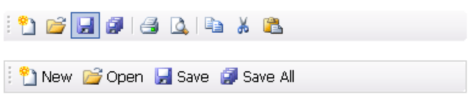
El atributo alt
El atributo alt sirve para introducir una breve descripción que muestre la información esencial de la imagen.
<img src="Munster.png" alt="Foto de la calle principal de Münster">
- En imágenes decorativas (bordes, marcos, etc) se coloca la etiqueta vacía:
alt="", o se declaran en el CSS. - En imágenes funcionales (iconos en botones y enlaces) se describe la funcionalidad.
El atributo longdesc
Se utiliza para gráficos complejos. Por ejemplo, diagramas de barras.
Este atributo lleva asociada una URL donde se ofrece una descripción detallada de la imagen.
<img src="BarDiagram.png"
alt="Cumulative incidence..."
longdesc="descripcion.html">
En descripcion.html se describen los datos contenidos en el gráfico.
{kind=link}
Aspecto visual
Si se utiliza el color para transmitir significado, deben proporcionarse otras alternativas.
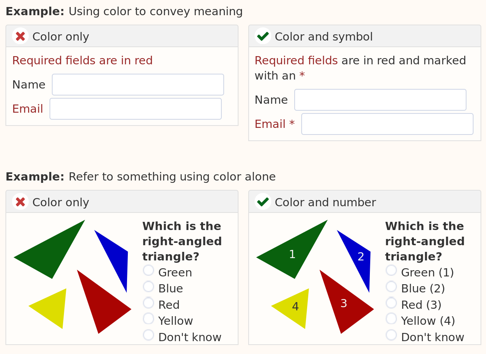Contraste
Procurar mantener suficiente contraste entre el texto de una página y el color de fondo.
Correcto:
Incorrecto:
Elementos de navegación
- Consistentes a lo largo de las páginas.
- Proporcionar más de un método de navegación (p.ej. mapa del sitio, búsqueda)
- Mostrar información sobre la página actual (p.ej. breadcrumbs, título de la página actual), etc.
Ejemplo de breadcrumb:
Agrupación de contenidos
Utilizar espacios para agrupar los elementos relacionados lógicamente.
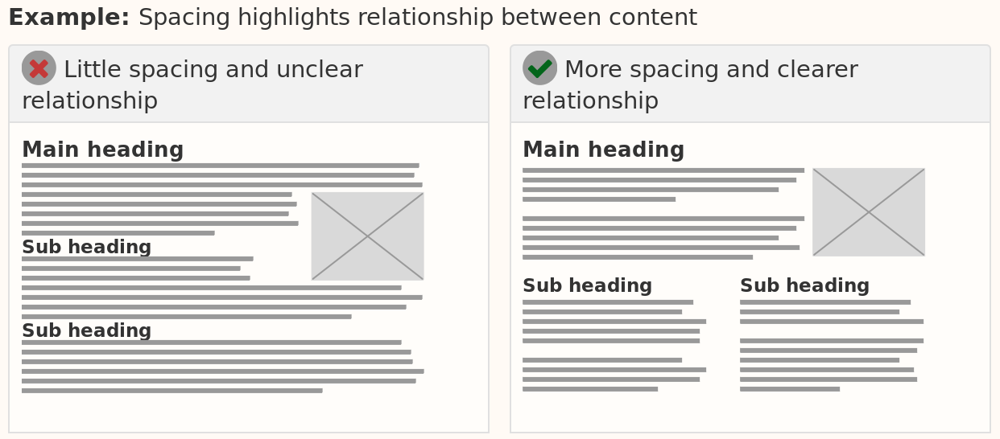Diseño adaptable
Tener en cuenta los distintos tamaños de pantalla a la hora de presentar el contenido:
- Dispositivos móviles: teléfonos, tablets, etc.
- Zoom de páginas web en navegador.
Los frameworks de diseño adaptable (responsive design), como Bootstrap, facilitan esta tarea.
Estructura de la página
HTML5 proporciona elementos para especificar la semántica de algunos de los elementos de una página web.
<h1>, ... <h6>, <strong>, <em>, <ins>, <del>,
<nav>, <section>, <figure>, etc.
Deben evitarse los elementos obsoletos de HTML, más centrados en el estilo visual de la página:
<b>, <i>, <s>, <big>, <font>, <tt>, etc.
El estilo visual debe definirse en el CSS.
Etiqueta <title>
El contenido de esta etiqueta suele mostrarse en la barra de título de la ventana o pestaña del navegador.
Se identifica con el encabezado principal (etiqueta <h1>).
Ejemplos de títulos significativos:
- Página principal:
Universidad Complutense de Madrid. - Sección actual:
Últimas noticias - Universidad Complutense de Madrid. - Paso actual de un proceso:
Pago (Paso 1 de 3) - Universidad Complutense de Madrid.
El atributo role
Pese a que HTML5 define etiquetas para estructurar semánticamente el contenido,
<header>, <footer>, <nav>, <section>, etc.
a veces quiere insertarse un tipo de contenido que no se corresponde con ninguna de estas etiquetas, o bien es más adecuado utilizar otro elemento con semántica distinta.
(por ejemplo, utilizar <a> para representar un botón)
El atributo role permite especificar el papel semántico que juega un determinado elemento en la página.
<a href="#" role="button">Eliminar<a>
También se utiliza para aquellos elementos HTML5 relativamente nuevos que podrían no ser reconocidos por otros navegadores.
Lista de roles:
http://w3c.github.io/html/dom.html#allowed-aria-roles-states-and-propertiesEjemplos
<div role="dialog">
... Cuadro de diálogo ...
</div>
<ul role="menubar">
<li role="menuitem">...</li>
<li role="menuitem">...</li>
...
</ul>
<input type="text" role="searchbar">
Los elementos que contengan un determinado valor de role pueden ser tratados de manera especial por navegadores, lectores de pantalla, etc.
Los atributos aria-*
Mientras que el atributo role describe, en términos generales, el tipo de un objeto, los atributos aria-* especifican otras propiedades útiles de un elemento.
Por ejemplo:
aria-checked: indica si un checkbox está activado.aria-disabled: indica si un control está habilitado.aria-hidden: indica si un control está oculto.aria-expanded: indica si un elemento con rolmenu,combobox, etc. está desplegado.
Los atributos role y aria dentro de los documentos HTML se definen en un estándar W3C:
Existe un estándar más general sobre accesibilidad en RIAs:
W3C Recommendation - 14 December 2017
https://www.w3.org/TR/wai-aria-1.1/
Ejemplo
Suponemos el siguiente cuadro de texto con una ayuda emergente (tooltip):
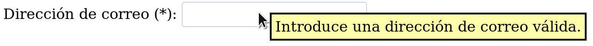El siguiente código HTML no indica nada sobre la semántica de cada uno de los componentes:
<label id="etiqueta" for="dirCorreo">
Dirección de correo (*):
</label>
<input type="text" id="dirCorreo" name="dirCorreo">
<div id="descripCorreo" class="emergente">
Introduce una dirección de correo válida ¿Ayuda emergente?
</div>
Mediante las etiquetas aria-* se le proporciona al software de apoyo (por ejemplo, lector de pantalla) más información sobre la relación entre los distintos elementos:
<label id="etiqueta" for="dirCorreo">
Dirección de correo (*):
</label>
<input type="text" id="dirCorreo" name="dirCorreo"
aria-required="true"
aria-labelledby="etiqueta"
aria-describedby="descripCorreo">
<div id="descripCorreo" role="tooltip" class="emergente"
aria-hidden="true">Introduce una dirección de correo válida
</div>
El atributo lang
Se utiliza dentro de la etiqueta <html> para especificar el lenguaje de la página web:
<html lang="es">
...
</html>
Las normas de accesibilidad del W3C recomiendan el uso de este atributo.
Si una parte del contenido HTML está en un idioma distinto al de la página principal, debe utilizarse lang en la etiqueta correspondiente.
<li lang="en">English website</li>
Orden de elementos en una página
El orden de elementos en el código HTML debe representar la estructura lógica del documento.
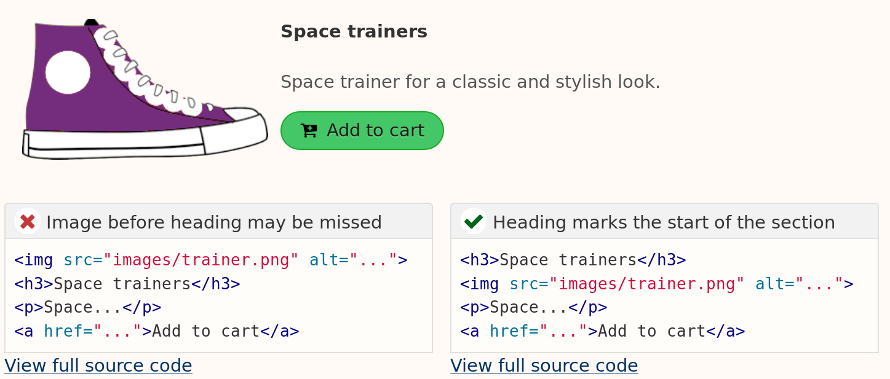Interacción con el sitio web
Los elementos que involucren interacción con el usuario (enlaces, botones, etc.) deben ser fácilmente reconocibles.
Las pseudoclases :hover, :focus, etc. ayudan al usuario a identificar los enlaces.
Etiquetas en formularios
Cada control de un formulario (cuadro de texto, caja de selección, etc.) debe ir acompañado de una etiqueta descriptiva, que se encuentre próxima al mismo.
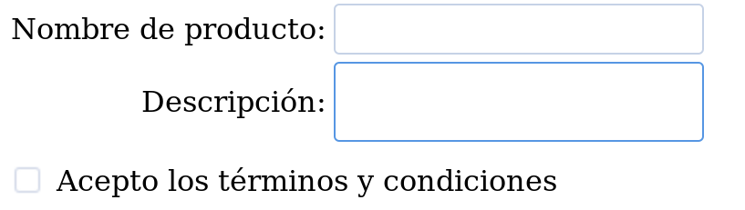Los elementos <label> permiten asociar un texto a cada elemento de un formulario.
<label for="cuadroNombre">Nombre:</label>
<input type="text" id="cuadroNombre" name="nombre">
En aquellos casos en los que no haya una etiqueta visible, debe utilizarse el atributo aria-label que indique el propósito del componente del formulario
<input type="text" aria-label="Nombre" name="nombre">
Retroalimentación visual
Los resultados de la interacción del usuario también deben ser visualmente notificados:
- Confirmación de envío de formularios.
- Mensajes de error.
- Mensajes de notificación de operaciones realizadas.
- Cambios en la página.
Los elementos que requieran la interacción del usuario deben ser resaltados sobre el resto de la página.
Ejemplo: Material Design (Android)
El estilo de diseño Material Design se basa en el uso de transiciones y animaciones para reflejar los resultados de la interacción del usuario en la página.
Texto de enlaces (<a>)
Debe describir el contenido apuntado por el enlace.
Correcto:
- Horarios del curso (PDF)
- Lea nuestra política de privacidad.
Incorrecto:
- Para acceder a la política de privacidad haga clic aquí.
Claridad y precisión en instrucciones
Incorrecto:
Correcto:
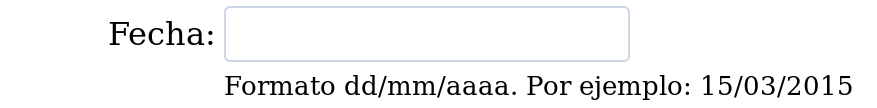Incorrecto:
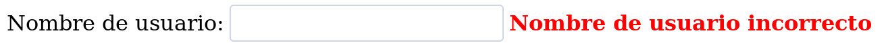Correcto:
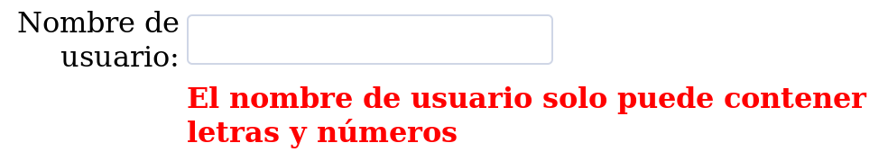Uso de CAPTCHA
CAPTCHA = Completely Automated Public Turing test to Tell Computers and Humans Apart
Se trata de una prueba automatizable para determinar si el usuario es humano o no. La prueba consiste en mostrar una serie de caracteres distorsionados de tal forma que solo un humano puede reconocerlos.
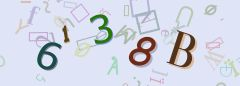Objetivo: evitar el uso de la aplicación por parte de robots.
No Captcha-ReCAPTCHA
El uso de los captchas tradicionales conlleva una importante barrera de acceso para las personas con discapacidad visual.
Existe una alternativa más accesible: https://www.google.com/recaptcha/
Utiliza los parámetros de interacción con el ratón y teclado para distinguir si el usuario es humano.
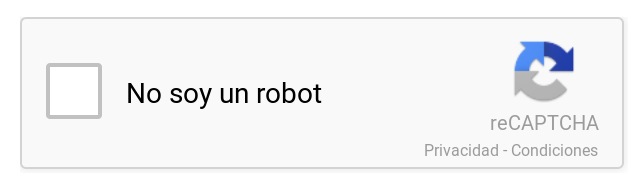Navegación mediante teclado
La navegación exclusiva mediante ratón supone una barrera para los usuarios que no pueden utilizarlo.
Las páginas web deben estar preparadas para su navegación mediante el teclado.
Por defecto, los navegadores permiten utilizar la tecla TAB para que el usuario se desplace entre los distintos elementos activables de la página web (enlaces, cuadros de texto, botones, etc).
En aquellos elementos que no sean activables por defecto (por ejemplo, <div>, <li>, <span> puede añadirse el atributo tabindex="0" para que puedan adquirir el foco de entrada.
<ul id="menu">
<li tabindex="0">Elemento 1</li>
<li tabindex="0">Elemento 2</li>
<li tabindex="0">Elemento 3</li>
</ul>
Al hacer un elemento activable, es conveniente asociarle, además, un estilo CSS a la pseudoclase :focus, para que el usuario pueda identificar qué elemento tiene el foco de entrada.
#menu li:focus {
background-color: #FDD;
}
Mediante jQuery puede detectarse la pulsación de la tecla Intro cuando se selecciona un elemento.
$(document).ready(function() {
$("#menu li").on("keydown", function(evt) {
if (evt.which === 13) {
alert("Se ha pulsado la opción " + $(this).text());
evt.preventDefault();
}
})
});
Herramientas de apoyo
- Herramientas de evaluación.
- Herramientas de diseño y desarrollo.
Herramientas de evaluación
Analizan automáticamente un sitio web y proporcionan indicaciones sobre aquellos elementos que pueden hacer que el sitio no sea accesible.
Ejemplos:
- TAW (http://www.tawdis.net)
- AChecker (http://www.atutor.ca/achecker/)
Ejemplo: TAW
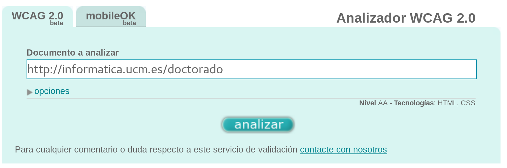
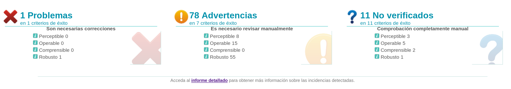
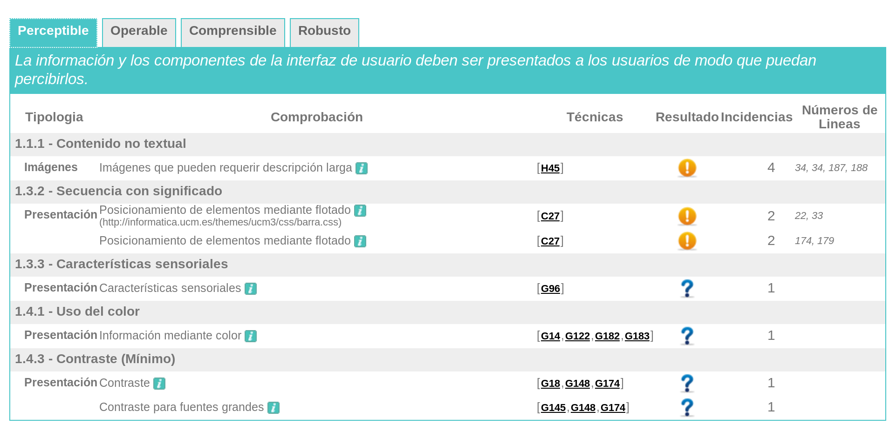
Herramientas de diseño y desarrollo
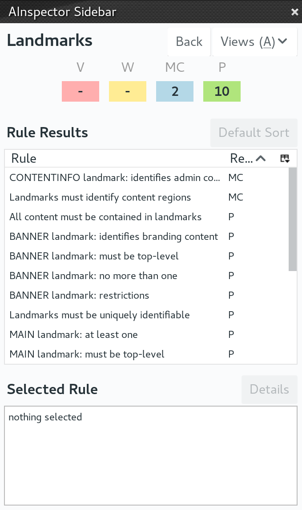
AInspector Sidebar (Firefox)
http://ainspector.github.io/Evalúa la accesibilidad (con respecto a WCAG 2.0) de la página actual desde Firefox.
En Chrome: Accesibility Developer Tools
Accessibility color Wheel
http://gmazzocato.altervista.org/colorwheel/wheel.phpDetermina la adecuación de una determinada combinación de colores de texto y fondo.
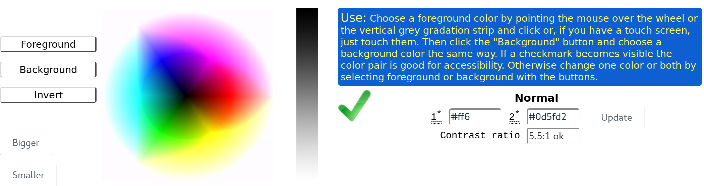Referencias
- Web Accesibility Initiative https://www.w3.org/WAI/
-
Web Content Accessibility Guidelines (WCAG) 2.0
W3C Recommendation https://www.w3.org/TR/WCAG20/